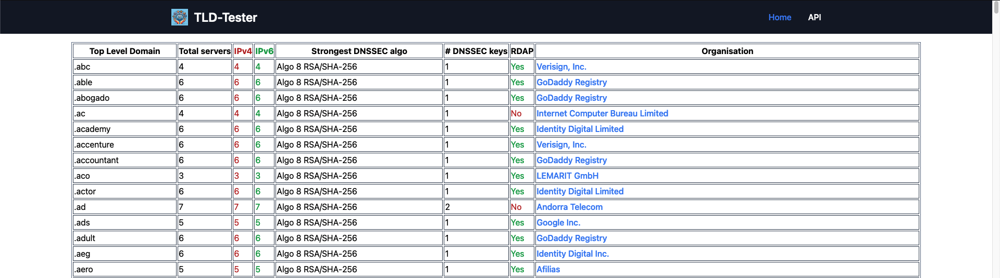
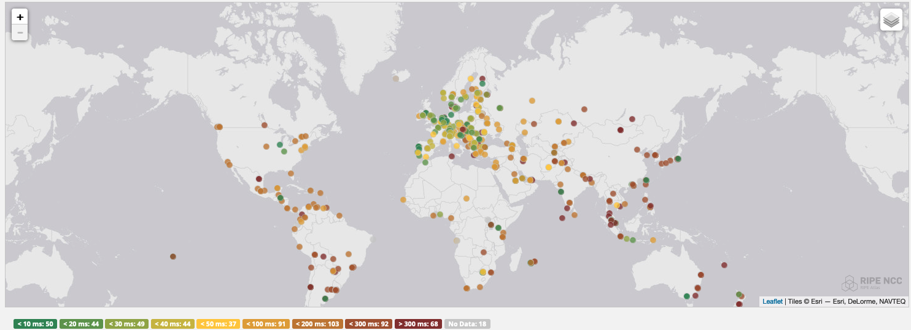
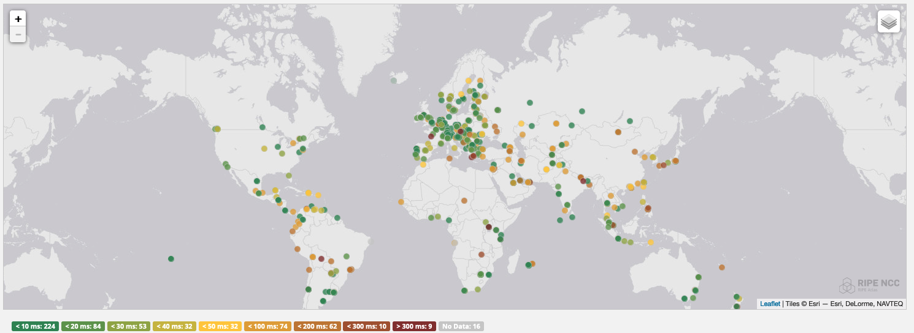
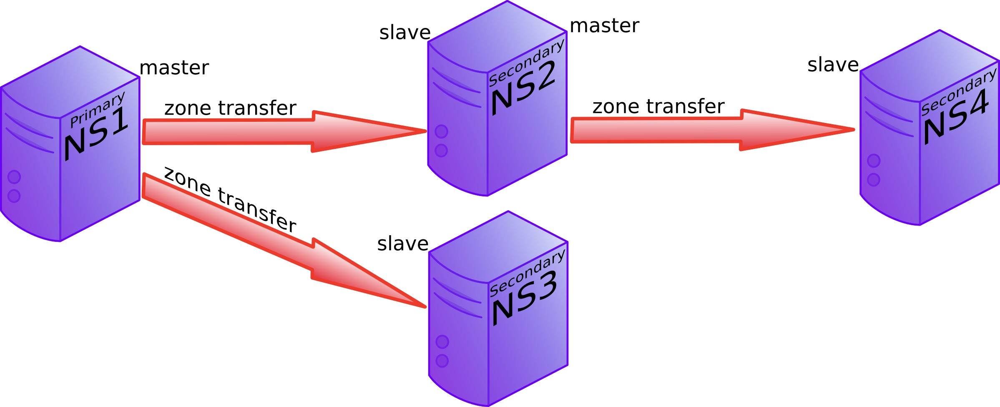

Comment faire du DNS solide
Coucou Facebook...
https://tldtest.net
.im
.net
Registrar - How to run a domain registrar @ MCH2022 by Q Misell
urlab.be

DNS Barbecue colorized:
Contexte :
Panne de Facebook 04/10/2021-17:39 CEST
Lien Wikipedia vers l'histoire
Fonctionnement de DNS
$TTL 86400
$ORIGIN af4.be.
@ IN SOA ns1.adechamps.net. hostmaster.adechamps.net. (
2024021008 ; Serial
604800 ; Refresh
86400 ; Retry
2419200 ; Expire
86400 ) ; Negative Cache TTL
IN NS ns1.he.net.
IN NS pns51.cloudns.net.
IN MX 10 spool.mail.gandi.net.
IN MX 20 fb.mail.gandi.net.
darkstar IN A 37.27.3.196
IN AAAA 2a01:4f9:c012:4921::1
matrix IN A 37.27.3.196
IN AAAA 2a01:4f9:c012:4921::1
_matrix._tcp.matrix IN SRV 0 0 8448 matrix